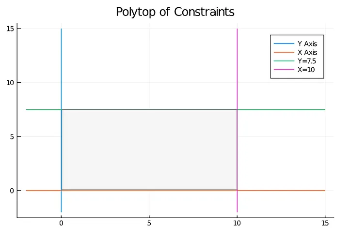
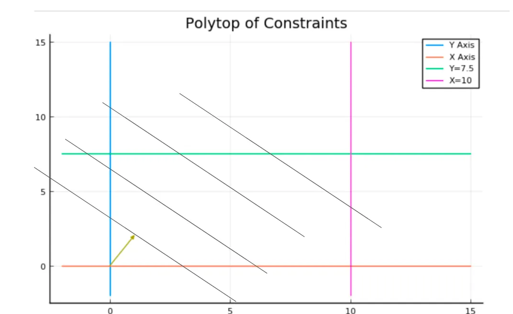
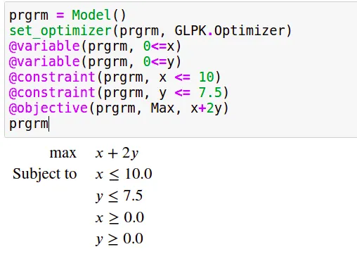
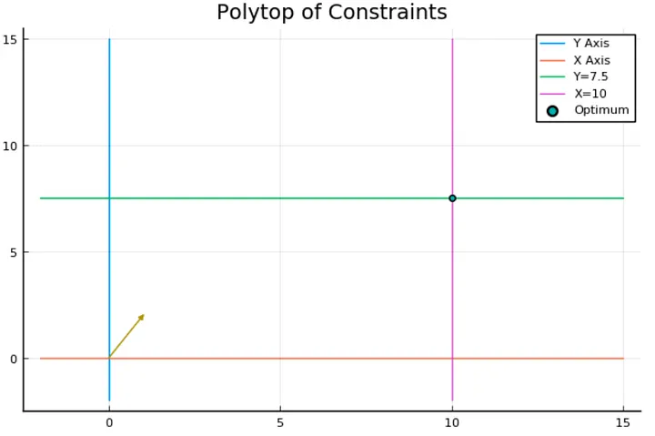
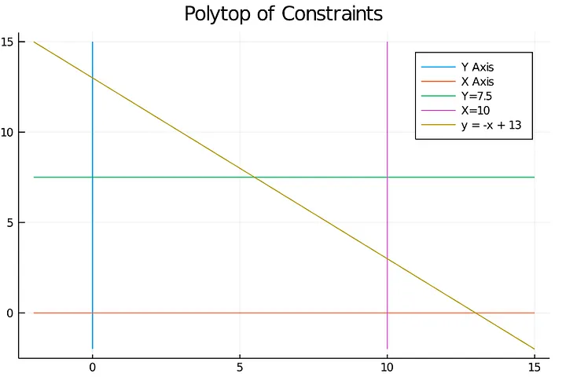
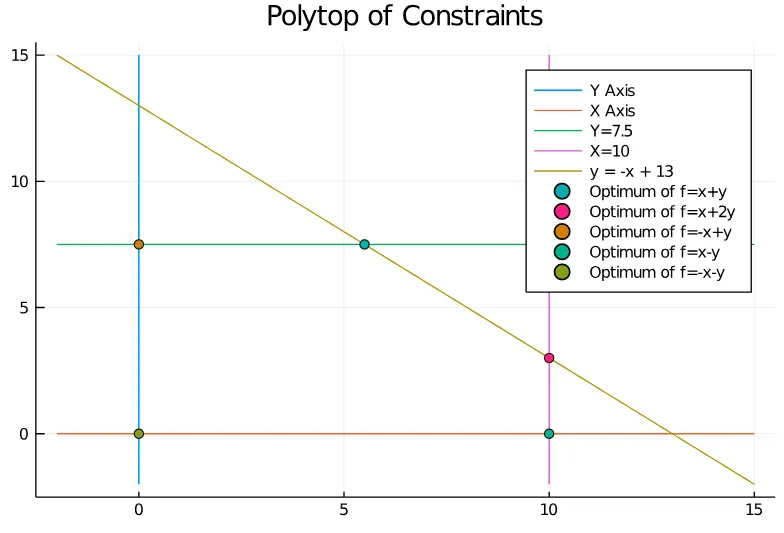
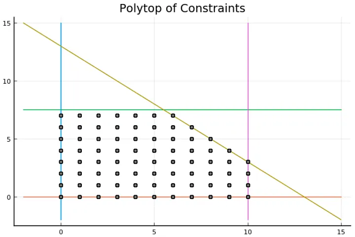

A comprehensive study of Mixed Integer Programming with JuMP on Julia (Part 1)
Some basics of Linear/Mixed Integer Programming & How to use a heuristic callback inside a MIP solver.
Introduction
One of the primary purposes of the computer sciences and operation research is to solve problems efficiently; problem-solving is a field where we often find very “ad-hoc” methods of resolution, they can be efficient, but they rely on some specific properties of the problem which are not necessarily easy to notice.
In this series of posts, we will introduce and discover a very versatile and generic way of thinking and of solving a wide variety of problems, and this introduction will occur on three sides:
- On the theoretical view, we will investigate how Linear Programming and Mixed Integer Programming can help us in modelling big combinatorial problems.
- In the practical aspect, we will see how we can use an API to instantiate a Linear Program and exploit some of the problems we solve to improve the solving procedure's efficiency.
- And finally, from the operational perspective, we will discover a very recent, efficient and user-friendly language: Julia, and more precisely, we will discover a library: JuMP, a domain-specific modelling language for mathematical optimization.
This series of posts doesn't assume a background in Julia; I think a Python background is more than enough to understand the pieces of code I will use.
What is this post about
This post is the pilot of the series, but it will also be the starting point of it by giving you the background you will need to understand the practical techniques that can be used to solve large combinatorial problems.
It will also be the only post in which we will present a pure theoretical academic problem as an application for simplicity.
Still, if you are comfortable with mixed-integer programming, this post (and more generally this series) is a good occasion to see to use Julia and, more precisely, how to tune your exact solving procedure with some approached methods.
Smooth introduction to Linear Programming (and to Julia)
Let’s start by presenting how a linear program is structured and how a solver will perform a resolution. To do it, we will go through a simple example.
To make it visualizable, we will take an example where we will try to optimize a linear function of two variables with respect to a set of linear constraints.
$$ \begin{align*} \text{max} \quad & x + 2y \\ \text{Subject to} \quad & x \leq 10.0 \\ & y \leq 7.5 \\ & x \geq 0.0 \\ & y \geq 0.0 \end{align*} $$
Geometrically, if we take each constraint and replace the inequality with equality, each constraint will be a line equation. This line will separate R² into two parts and invalidate one of them according to the direction of the inequality.
We will name the polyhedron delimited by the set of constraints, which is, in this case, a polytope because it’s close and bounded, the polyhedron (or the polytope) of constraints.
As a warm-up to Julia, let’s see how we can draw the polytope of constraints by using plot.jl, a “matplotlib-like” framework and the Package LinearAlgebra is similar to NumPy.
First, we use Pkg, which is the built-in package manager of Julia, to add the required Packages,
using Pkg;
Pkg.add("LinearAlgebra");
Pkg.add("Plots");
Pkg.add("PyPlot");
After adding them, we can import them.
using LinearAlgebra
using Plots
pyplot()
The last line aims to complete some package plot functionalities for visualization (check the doc here for more details).
An easy way to draw any function is to sample points and compute the associated images, and this can be done in Julia the following way :
x_v = LinRange(-2,15,100)
plot([x_v], [x_v .+ 7.5], label ="Y=x + 7.5")
plot!([x_v], [-2x_v .+ 20], label ="Y= -2x + 20")
The first line will sample 100 points from the interval [-2, 15]; a part of this; you have several things to notice :
- “plot” is used to create a line plot and plot! update a created plot.
- “.+” is the element-wise equivalent of the vector addition.
- Julia is so handy that omitting the “*” between a coefficient and a variable is possible even with a vector.
These lines will produce the following plot :

and now let’s print the polytope of constraints :
x_v = LinRange(-2,15,100)
y_v = LinRange(-2,15,100)
plot([0*x_v], [y_v],label ="Y Axis")
plot!([x_v], [0*x_v],label ="X Axis")
plot!([x_v], [0*x_v .+ 7.5], label ="Y=7.5")
plot!([0*x_v .+ 10], [y_v],label ="X=10")
plot!(title = "Polytop of Constraints")

The grey area I added to the plot represents the space's portion, which satisfies the problem's constraints.
Now let’s focus on the objective function by looking at the vector (1,2), representing the gradient of the linear function x+2y.

Each line I added represents a line of points with the same value. The further you go in the gradient direction, the bigger the objective value becomes.
We can visually conclude that the best solution is at the intersection of the green and the pink line, so let’s see if we find this result using JuMP.
The traditional add/import lines (we will use GLPK as a solver, but nothing is dependant on it).
Pkg.add("JuMP")
Pkg.add("GLPK")
using JuMP
using GLPK
Now we declare our model and set the optimizer from GLPK:
prgrm = Model()
set_optimizer(prgrm, GLPK.Optimizer)
We add the variables and precise their scope; by default, the variables are continuous :
@variable(prgrm, 0<=x)
@variable(prgrm, 0<=y)
Now we create and add the two remaining constraints; the first two are in the scope of the variables;
@constraint(prgrm, x <= 10)
@constraint(prgrm, y <= 7.5)
Finally, we add the objective function and precise sense of optimization, which will be, in this case, a maximization :
@objective(prgrm, Max, x+2y)
One interesting feature of JuMP and especially when using it with Jupyter-notebook is that we can print the program as easily as the content of any variable, which gives us the following output :

And now solving it is as easy to say as it is to do :
optimize!(prgrm)
After that, we can access the values of the variables after optimization like this:
value.(x)
value.(y)
And so one we can update our precedent plot to confirm our graphical resolution with the line :
plot!([value.(x)], [value.(y)], seriestype = :scatter, label="Optimum")
This gives us :

The Simplex principle
Solving a linear program is done with the Simplex algorithm, which works because of a simple but important principle :
Optimizing a linear function on a polytope (or more generally a compact convex space) always leads us to a vertex (more generally an extreme point).
The simplex algorithm is a local search procedure that walks from a vertex to another to increase the objective function's value until we reach a vertex where every neighbour has an inferior value.
Since the vertex where the optimization ends depends only on the objective function, we can try to find an objective function for each polytope vertex.
For example, in the following polytope (Note that we added a constraint to increase the number of vertex of the polytope)

We can obtain any of the vertices by optimizing in different directions.

From Continuous to Integer variables: The Branch-and-Bound Method
Even if it’s not totally how a solver works, the first thing you have to understand to assimilate how Mixed Integer Programming works is the Branch and Bound method.
Let’s take the precedent example but restricting our variables to integers; the feasible region is no longer the grey area inside the polytope. Still, we can compute the feasible integer points, which give us the following figure :

In grey, we can see the feasible solutions, and the first thing we can notice is that some vertices are in the integer solutions and some not, and this distinction is crucial, but we will get back to this point later.
The branch and bound procedure create a tree called “enumeration tree”; in each node, it constructs a mixed-integer program and solves its “linear relaxation” with the simplex algorithm, which means the same program after ignoring integrality constraint, from this point on, there are two possible outcomes :
- The solution is integer feasible, and therefore we stop the resolution.
This can happen if the polytope of constraints has integer vertices. For instance, if we solve the LP relaxation of the precedent mixed-integer program with the objective function 2x+y, we will find (10,3), which is an integer solution.
- The solution is “fractional”, and therefore we need to branch.
And this will happen in the precedent polytope if we try to optimize the function x+2y,